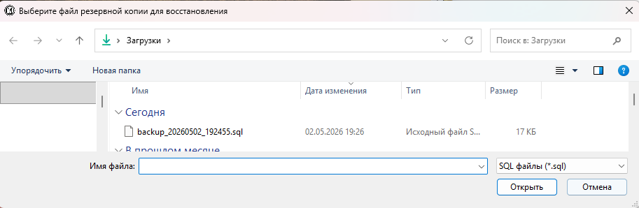
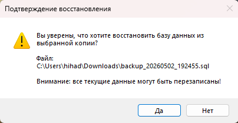
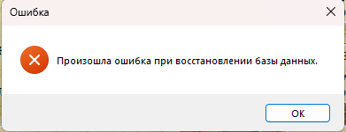

Функция «Восстановить резервную копию» позволяет восстановить базу данных из ранее созданного файла `.sql`. Внимание: эта операция заменяет все текущие данные на данные из резервной копии.
Рис. 1. Кнопка «Восстановить резервную копию»
Порядок действий
1. Откройте форму управления пользователями (раздел «Пользователи» → кнопка «Добавить» или «Редактировать»).
2. Нажмите кнопку «Восстановить резервную копию».

Рис. 2. Диалог выбора файла .sql для восстановления
3. В появившемся диалоговом окне выберите файл резервной копии (.sql) и нажмите «Открыть».

Рис. 3. Предупреждение о перезаписи текущих данных
4. Подтвердите восстановление, нажав «Да». Будьте внимательны: все текущие данные будут перезаписаны данными из выбранной резервной копии.
5. Дождитесь завершения процесса. При успешном завершении появится сообщение:
Что происходит при восстановлении
При восстановлении программа последовательно выполняет все SQL-команды из выбранного файла.
При этом:
— Существующие таблицы с такими же именами будут перезаписаны (удалены и созданы заново).
— Все текущие данные будут утрачены.
— Восстанавливаются также хранимые процедуры и функции.

Рис. 5. Сообщение об ошибке при восстановлении
Возможные ошибки и их решения
| Ошибка | Решение |
|---|---|
| Файл не выбран | Убедитесь, что вы выбрали файл .sql в диалоговом окне |
| Файл повреждён или имеет неверный формат | Используйте другую резервную копию; убедитесь, что файл создан этой же программой |
| Недостаточно прав | Убедитесь, что пользователь MySQL имеет права на создание и удаление таблиц |
| Ошибка подключения к БД | Проверьте параметры подключения в файле config.ini |
| Недостаточно места на диске | Освободите место на диске, где установлен MySQL сервер |
Важные рекомендации
Перед восстановлением базы данных обязательно:
1. Создайте свежую резервную копию текущей базы данных (на случай, если потребуется откатить изменения).
2. Убедитесь, что выбранный файл — это правильная резервная копия нужной базы данных.
3. Предупредите пользователей о временной недоступности системы.
4. После восстановления проверьте целостность данных (откройте несколько разделов, убедитесь, что данные отображаются корректно).
Примечание: Восстановление может занять некоторое время в зависимости от размера файла и производительности сервера. Не закрывайте приложение до появления сообщения об успешном завершении.